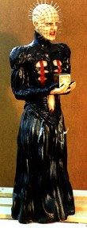
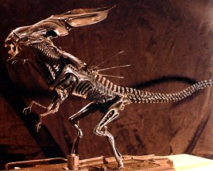
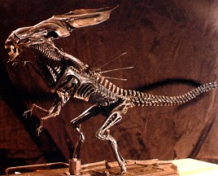

How old are you, Tom, and how long have you been sculpting
model kits?
How old are you, Tom, and how long have you been sculpting
model kits?
 I'm twenty six years old, I've been sculpting for six years,
and doing garage models for about four years now. I started
doing just things that I liked doing for myself such as "A
Nightmare on Elm Street" stuff, when it first came out and there
wasn't anything around yet, kitwise.
I'm twenty six years old, I've been sculpting for six years,
and doing garage models for about four years now. I started
doing just things that I liked doing for myself such as "A
Nightmare on Elm Street" stuff, when it first came out and there
wasn't anything around yet, kitwise.
I've always been a model kit builder... I've been drawing and stuff since I can remember.. I knew I was gonna end up in commercial art, but I didn't expect to be doing this. The first kits I did, officially, were the Screamin' kits. The first one was the Pinhead Cenobite. I also did Leatherface and Lon Chaney, Sr. from the movie London After Midnight.
For Screamin', normally they like to have them done within one month. But, because of complications, it usually ends up being more like a month and a week. it all depends on the complexity of the kit. For Pinhead, I didn't have as much reference as I would have liked. I guess Screamin' had a hard time getting information at the time. But what I ended up doing, for a lot of it, was stopping the video and taking pictures off the screen.
Of course. I had all the Fangoria's for pictures and there were some color stills and slides that New World sent out; but they weren't really production shots. No behind-the-scenes, no effects shots, or even drawings of the suit, that would have been especially helpful.
Originally, there were a few things that were different on my sculpture. The skirt, for instance, when I did it. It didn't have any texture to it: and the reason why I didn't do that is because, from looking at all the stills, to me it looked like it would be smooth if you touched it. Because at the time. I really didn't care for the texturing they put on it to get that "scale- pattern" effect to it. But, it's Daniel Fay's company, and if he sees fit to alter the sculpture once it arrives in his hands. he can. I also sculpted the hands straight, not bent as they are in the finished model kit. I made it really big, 19 and a quarter inches tall, because it shrinks an inch in the molding process.
And I sculpted a Puzzle Box that went with my nineteen inch figure and fit in his open palms; but Danny bent the fingers up to fit around the smaller Box that he includes in the kit. (this is not the one I sculpted). At the time they didn't know what process they were gonna use to mold the puzzle box. And the shrinkage of that would not be in direct relation to the shrinkage of the sculpture.
Actually, I scratch-built the Box that ended up being on the packaging, if you notice the Box that they supplied, with the little stickers and stuff. If it's painted and weathered it really looks kinda cool. I did not paint the copy of the kit that was photographed for use on the box cover.


 Were you paid well?
Were you paid well?
 Well, basically. it was less that a thousand bucks. You
know living in L.A. ain't cheap. At the time, it was a thousand
bucks for my rent. I'm not complaining though, because I had no
track record. And in all honesty he didn't know if I could do a
human likeness. All he had seen at the time was my Queen alien
sculpture. And so, it was nice of them to hire me on that kit.
Well, basically. it was less that a thousand bucks. You
know living in L.A. ain't cheap. At the time, it was a thousand
bucks for my rent. I'm not complaining though, because I had no
track record. And in all honesty he didn't know if I could do a
human likeness. All he had seen at the time was my Queen alien
sculpture. And so, it was nice of them to hire me on that kit.
They were, and rightfully so, contracted in such a way that they have right of refusal of the sculpture; if they don't like it, they don't have to pay me. They do pay an up-front "kill fee", but they have to approve of it first, and then the motion picture company has to approve it as well. Both of them have to approve it, it's a two-tiered process. I have to send them video and/or photos of the prototype while it's being worked on; and then the sculpture has to be sent to them and they have to inspect it by hand. If all goes well, then I get paid.
The first time was really frustrating. On Pinhead, I felt like I spent a lot more time on research that I should have been spending on sculpting. Again, the problem was, I just didn't have adequate reference. You know, not to sound nit-picky or anything, you know I do my own line of kits that are more along the lines of really old horror. These are cast in resin, that doesn't have the manufacturing problems of vinyl. And so, there's a lot more to consider when you're planning stuff, such as with metal molds. By this I mean the position of the figure, the number of parts in the kit, the break lines or mold marks. (The pose is very important to the molding process-Writer's Note.)
Danny Fay could not have made this kit without certain restrictions. In other words, it would have been prohibitive, costwise, or so Danny says. Apparently it would not have been cost-effective. This is the reason that a web of plastic is positioned between Pinhead's arms and his chest. Usually, when I build one for myself, I cut the web out and putty it up so there isn't a gap in the model. Danny Fay feels that the majority of people out there can overlook this flaw, and as far as complaints go, he has probably heard more of that than anybody else has.
 How did you get the Pinhead job?
How did you get the Pinhead job?
 Ahh, it was kinda weird. . . Like I said I was making kits of
my own mainly from my own characters and I was at the Weekend of
Horrors in Los Angeles in '89. And I was just in the process of
moving from Arizona, which is where I'm from, to Santa Barbara
with the hopes of playing soccer for a pro team.
I brought along a Queen Alien

that I'd sculpted, which was pretty sizey. So I
had this Alien that was sort of a prototype. Basically what
happened was that a girl I was seeing at the time, Sheri
Darveaux, was at the convention with me and she went over and got
Danny Fay's attention without me knowing it, and asked him to
check out the Queen. So when I came back to the table, they were
talking and Danny Fay said, "How'd you like to do something for
Screamin'?" and that's basically what happened.
Next, we talked over the phone, and confirmed everything.
Then he sent me a package with a real simple contract, outlining
all the stuff that we'd already discussed.
Ahh, it was kinda weird. . . Like I said I was making kits of
my own mainly from my own characters and I was at the Weekend of
Horrors in Los Angeles in '89. And I was just in the process of
moving from Arizona, which is where I'm from, to Santa Barbara
with the hopes of playing soccer for a pro team.
I brought along a Queen Alien

that I'd sculpted, which was pretty sizey. So I
had this Alien that was sort of a prototype. Basically what
happened was that a girl I was seeing at the time, Sheri
Darveaux, was at the convention with me and she went over and got
Danny Fay's attention without me knowing it, and asked him to
check out the Queen. So when I came back to the table, they were
talking and Danny Fay said, "How'd you like to do something for
Screamin'?" and that's basically what happened.
Next, we talked over the phone, and confirmed everything.
Then he sent me a package with a real simple contract, outlining
all the stuff that we'd already discussed.

 O.K., what was the medium you used to do Pinhead?
O.K., what was the medium you used to do Pinhead?
 I used epoxy putty and it was the water-soluble type. It's
really sticky, nasty stuff, it sticks to your tools, so I had to
keep my tools wet. But it's nice because you can kind of fool
with it with brushes, you can brush it, and get a nice feathered
edge and stuff. So you start with a wood block for an armature.
for something that size, and the arms and everything were wood,
too. From there it's pretty much a puppet-looking thing. With
the Cenobite, he had a skirt. He didn't have legs. The epoxy
was pretty thick, actually, with him (Pinhead). I don't know
exactly, but it had to be in some areas about half-inch to three
quarters of an inch. And with the head, it was just a round ball
of epoxy putty, and then it's just a bunch of layers. I also
use Sculpey; with Sculpey, you have to bake it, and epoxy putty
dries open-air, but it can be baked to speed up the setting time.
I used epoxy putty and it was the water-soluble type. It's
really sticky, nasty stuff, it sticks to your tools, so I had to
keep my tools wet. But it's nice because you can kind of fool
with it with brushes, you can brush it, and get a nice feathered
edge and stuff. So you start with a wood block for an armature.
for something that size, and the arms and everything were wood,
too. From there it's pretty much a puppet-looking thing. With
the Cenobite, he had a skirt. He didn't have legs. The epoxy
was pretty thick, actually, with him (Pinhead). I don't know
exactly, but it had to be in some areas about half-inch to three
quarters of an inch. And with the head, it was just a round ball
of epoxy putty, and then it's just a bunch of layers. I also
use Sculpey; with Sculpey, you have to bake it, and epoxy putty
dries open-air, but it can be baked to speed up the setting time.

 I understand the commission you're working on now for
Screamin' is another Cenobite.
I understand the commission you're working on now for
Screamin' is another Cenobite.
 Yes. it's Chatter. I don't really care too much for the
second Chatterer in Hellbound, I'm basing my sculpture on the
first one. And again, of course, the main concern is REFERENCE.
I've been on a stills-search to all the shops, Hollywood Book &
Poster, everywhere; and Daniel Fay has been trying to get stuff
from the movie company and Image Animation (the FX company) for
me. I've gotten as much as I can, but there isn't much available
of the lower portion of his body and from behind. Unfortunately,
the frame grabs they sent weren't much help by themselves, but
combined with all the footage from the films, the stills, etc.,
the amalgamation is better than nothing at all. Hopefully, the
Chatterer sculpture will be an improvement on the Pinhead one.
To sculpt Chatterer, I used only Sculpey. When you purchase
this kit, it should be in six pieces.
Yes. it's Chatter. I don't really care too much for the
second Chatterer in Hellbound, I'm basing my sculpture on the
first one. And again, of course, the main concern is REFERENCE.
I've been on a stills-search to all the shops, Hollywood Book &
Poster, everywhere; and Daniel Fay has been trying to get stuff
from the movie company and Image Animation (the FX company) for
me. I've gotten as much as I can, but there isn't much available
of the lower portion of his body and from behind. Unfortunately,
the frame grabs they sent weren't much help by themselves, but
combined with all the footage from the films, the stills, etc.,
the amalgamation is better than nothing at all. Hopefully, the
Chatterer sculpture will be an improvement on the Pinhead one.
To sculpt Chatterer, I used only Sculpey. When you purchase
this kit, it should be in six pieces.
The original deadline was February 12, but because we are gathering more information I'm hoping it will be extended, because I'll end up re-working all the stuff for which I didn't have proper reference. It's roughed out at this stage (first week of February). That's all, it's pretty much a roughed-out body. They contacted me a month prior to February 12. Another thing I'd like to mention is that there are no royalties given. And I think, that's it's Screamin's policy not to do that. In some of their kits they do a first run of 2,000 or 3,000 copies. I'm not sure. I think that's a lot. But from what they told me, the Pinhead has sold better than any of the other kits.

My own company, Artomic Creations, has chosen to do figures that are in the public domain, such as Nosferatu from the original silent German film with Max Shreck; The Golem, for which Forry Ackerman was kind enough to lend me his own personal copy of the original silent film for reference, and Cesare from the classic black and white Cabinet of Dr. Caliqari. This is my German Impressionist collection. And I also have an original zombie character, of my own.design, which I created. These kits sell from $80 - $100 each. They are made from cast resin with silicone molds. I plan to do more kits for the Artomic Creations line.
 Thank you, Tom, for filling us in on how you came into the
garage kit scene.
Thank you, Tom, for filling us in on how you came into the
garage kit scene.

This interview was originally published in issue no. 4 of Coenobium magazine.
Here is a brief update of what Tom has been up to in the past
five years:
For the Dark Horse cold-cast porcelain model kit line, he sculpted
Dracula. It was going to be Bela Lugosi but they ran into
licensing obstacles and had to make the face a generic Dracula.
For ERTL, he sculpted the likeness of William Shatner as Captain
Kirk from classic Star Trek. The kit was released in vinyl and
suffers from some shrinkage problems. Tom also sculpted Maila
Nurmi as Vampira as she appeared in her first television show in
1954, reclining on her couch. The kit is cast in resin. For his
own Artomic Creations line, Tom also sculpted scream queen Linnea
Quigley sitting in a gothic gargoyle throne (also in resin).
As well as Commander Ryker for GEOmetric in vinyl. Roman
Thorn Vampire Hunter was sculpted for Kit Kraft. The Devil Muse
Demon, a puppet-looking thing was sculpted for the Artomic line.
Originally published in
Coenobium.
Reprinted here with permission. Thanks, Coenobium!
The Gremlins in the Garage webzine is a production of Firefly Design. If you have any questions or comments please get in touch.
Copyright © 1994-1997 Firefly Design.